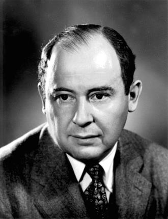

Uno scienziato tra molte discipline
John von Neumann, nato János Lajos Neumann a Budapest nel 1903, fu matematico, fisico e informatico. Lavorò su logica, teoria degli insiemi, meccanica quantistica, economia, teoria dei giochi, calcolo numerico e progettazione di computer.
La sua capacità di collegare teoria matematica, problemi applicati e progettazione contribuì a trasformare i calcolatori elettronici in strumenti scientifici generali.
Il suo nome è legato all'architettura a programma memorizzato perché contribuì a descriverla, diffonderla e realizzarla in progetti concreti.

Una cronologia essenziale
- Nasce a Budapest e mostra fin da giovane eccezionali capacità matematiche.
- Studia contemporaneamente chimica e matematica; consegue titoli in ingegneria chimica a Zurigo e matematica a Budapest.
- Lavora a Gottinga nell'ambiente scientifico di David Hilbert e sviluppa ricerche in logica e fisica matematica.
- Pubblica risultati fondamentali che contribuiscono alla nascita della teoria matematica dei giochi.
- È invitato a Princeton; nel 1933 diventa uno dei primi docenti dell'Institute for Advanced Study.
- Lavora su problemi di calcolo scientifico e militare e collabora al progetto Manhattan.
- Partecipa alla definizione dell'EDVAC e guida la costruzione della macchina IAS, modello per numerosi computer successivi.
- Muore a Washington dopo aver lasciato contributi in una straordinaria varietà di discipline.
Contributi che si incontrano ancora oggi
Teoria dei giochi
Formalizza decisioni strategiche nelle quali il risultato di ciascun soggetto dipende anche dalle scelte degli altri.
Calcolo scientifico
Promuove l'uso dei computer per simulazioni, equazioni numeriche e problemi troppo lunghi per il calcolo manuale.
Computer programmabili
Contribuisce all'organizzazione logica delle macchine a programma memorizzato e allo sviluppo della macchina IAS.
Turing e von Neumann: contributi distinti e collegati
| Aspetto | Alan Turing | John von Neumann |
|---|---|---|
| Domanda centrale | Che cosa può essere calcolato da una procedura meccanica? | Come organizzare e usare efficacemente un calcolatore elettronico generale? |
| Contributo simbolo | Macchina di Turing e macchina universale. | Descrizione e diffusione dell'architettura a programma memorizzato. |
| Natura | Modello matematico astratto. | Modello logico vicino alla costruzione dell'hardware. |
| Relazione | Si conobbero a Princeton. Von Neumann apprezzò il lavoro di Turing e gli propose una posizione di ricerca, che Turing non accettò. | |
Le idee si svilupparono in una comunità scientifica ampia. Turing, von Neumann, Church, Eckert, Mauchly e molti altri contribuirono con modelli, circuiti, memoria, metodi numerici e organizzazione dei sistemi.
Il nome dell'architettura
Il First Draft of a Report on the EDVAC circolò con il solo nome di von Neumann e rese molto influente lo schema. La denominazione è rimasta, anche se il progetto derivava da un lavoro collettivo.
Scienza e responsabilità
Von Neumann partecipò attivamente a programmi militari e nucleari. La sua biografia ricorda che le competenze scientifiche operano dentro decisioni politiche, sociali ed etiche.
Che cosa portiamo nella prossima lezione
- un algoritmo è una descrizione eseguibile, distinta dalla macchina fisica;
- un computer generale cambia comportamento caricando istruzioni diverse;
- la CPU esegue passi elementari, mentre il programmatore ragiona con strutture più astratte;
- per comunicare bene un procedimento servono rappresentazioni chiare e controllabili.
Nella Lezione 2 passeremo dalla storia alla rappresentazione: useremo diagrammi di flusso e pseudocodice per rendere visibile la struttura di un algoritmo.